Left: optimized, right: ground truth.
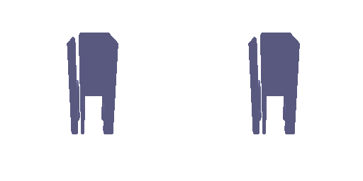
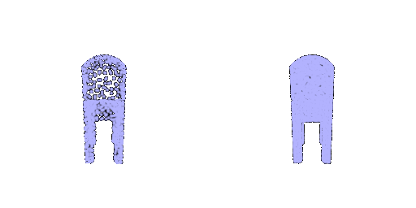
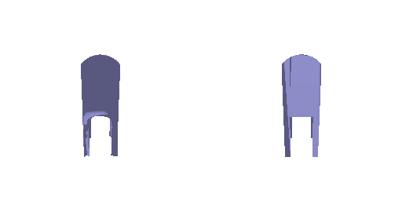
Each row: input RGB | ground-truth mesh | prediction.
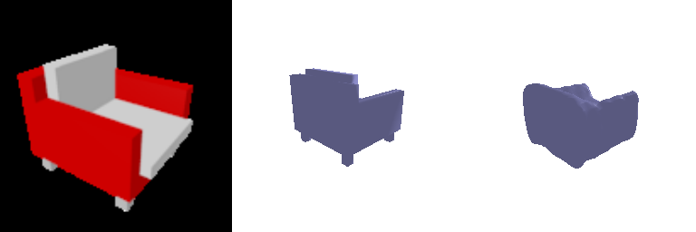
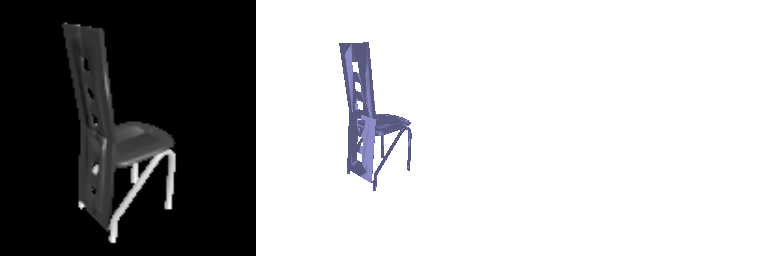
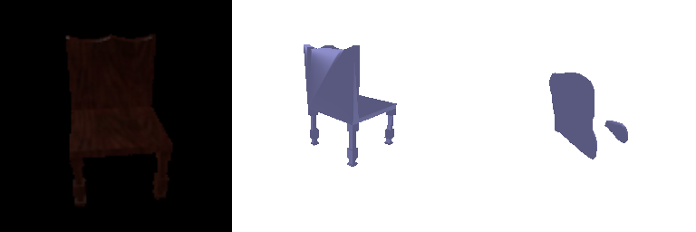
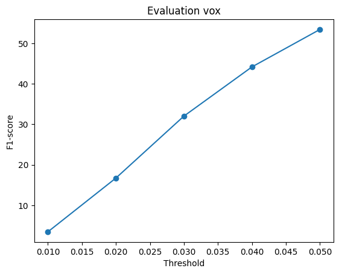
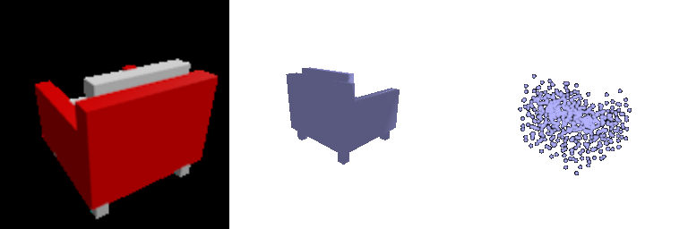
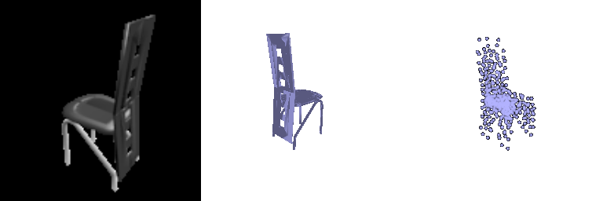
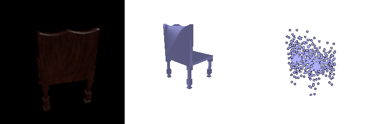
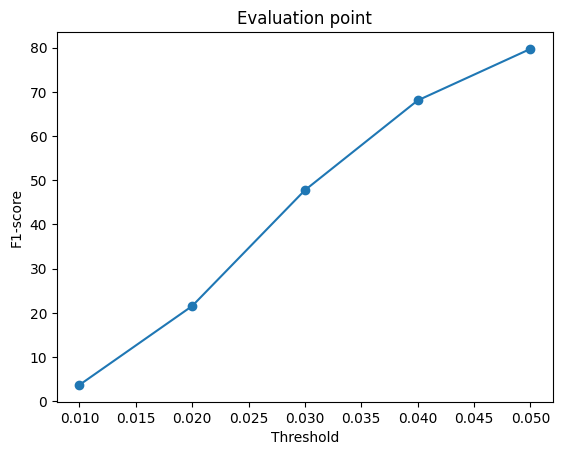
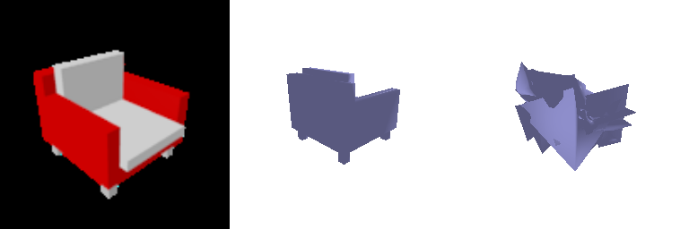
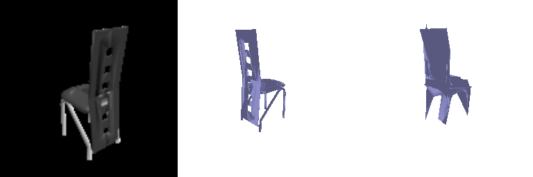
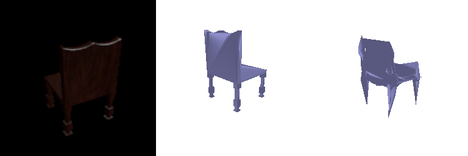
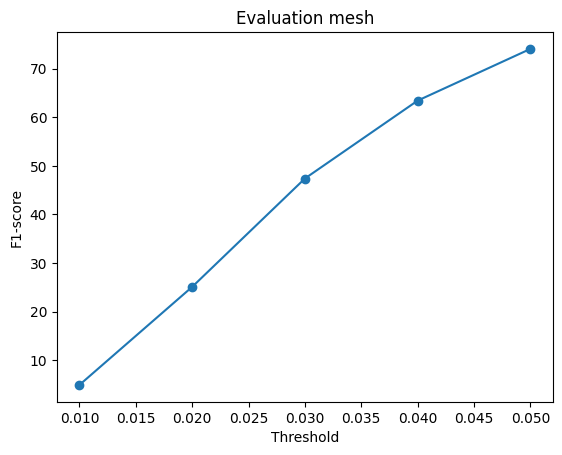
Comparison (point 79.7 > mesh 74.0 > voxel 53.4). The point cloud is trained with chamfer loss, which measures nearly the same thing as F1, and its points can go anywhere. The mesh uses the same loss, but a deformed sphere cannot open holes between legs, so it fills gaps with webbing. Voxels are limited by the 32³ resolution (one voxel ≈ 0.03), and BCE on a mostly empty grid makes thin parts low-confidence, so they disappear at the 0.5 threshold.
| threshold | F1@0.05 | empty predictions |
|---|---|---|
| 0.2 | 55.3 | 0 |
| 0.3 | 65.0 | 3 |
| 0.4 | 63.4 | 10 |
| 0.5 | 53.5 | 39 |
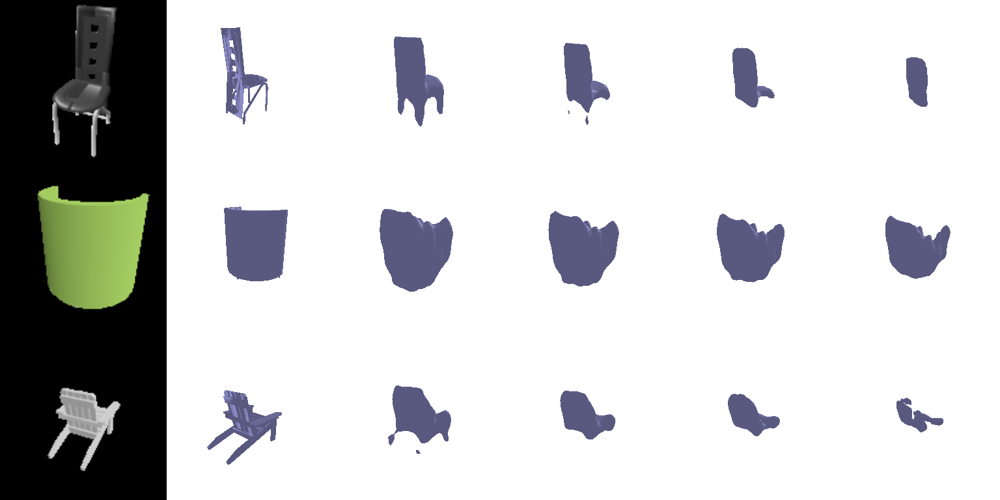
Input | GT | threshold 0.2, 0.3, 0.4, 0.5. Lowering the threshold to 0.3 recovers thin parts and gives +11.5 F1 without retraining. At 0.2 shapes become bloated and precision drops.
w_smooth| w_smooth | F1@0.05 |
|---|---|
| 0.0 | 75.2 |
| 0.1 | 74.0 |
| 1.0 | 68.9 |
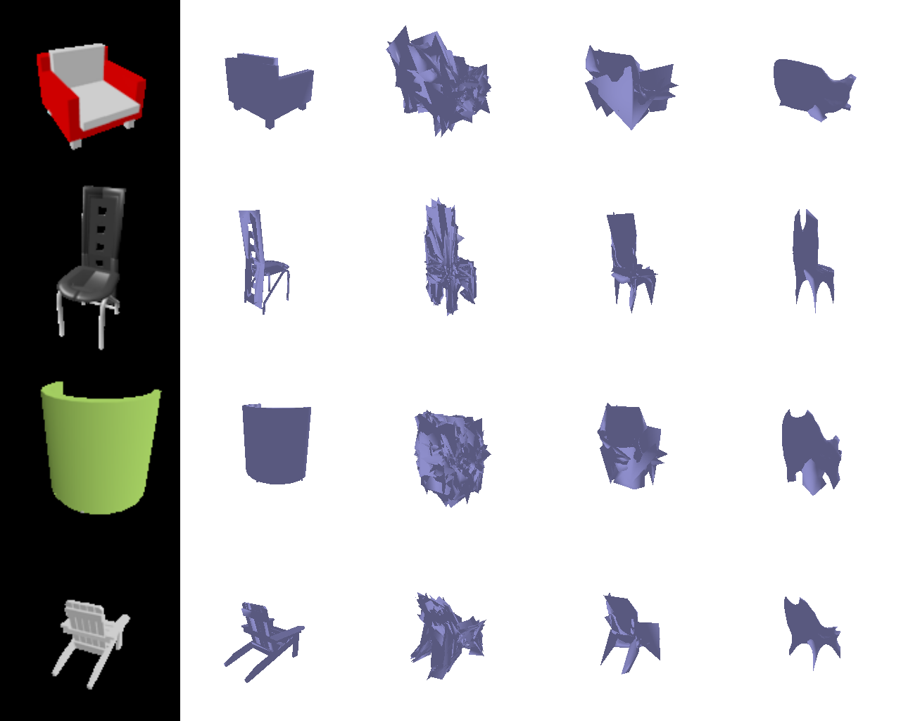
Input | GT | w_smooth 0, 0.1, 1.0. Without smoothing, F1 is highest but the mesh is crumpled and self-intersecting, because F1 only checks point distances. A high weight gives clean meshes but cannot stretch into thin legs. 0.1 is the best trade-off.
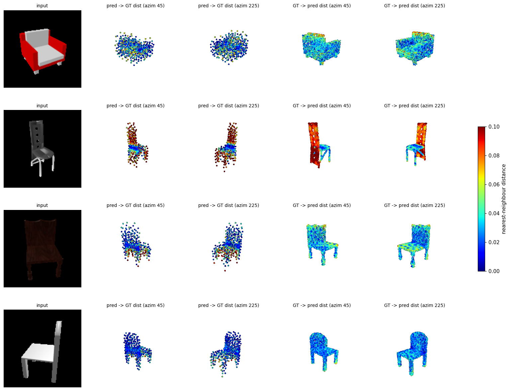
Errors concentrate on thin structures (tall backs, legs). Bulky chairs are reconstructed accurately.
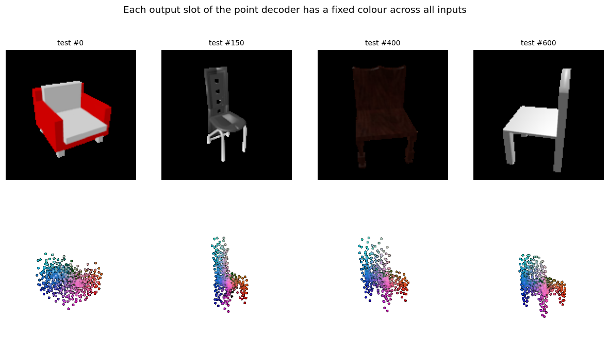
Each output point index has a fixed colour. The same index always lands on the same part (back, seat, legs), so the decoder has learned a template chair that it deforms per input.
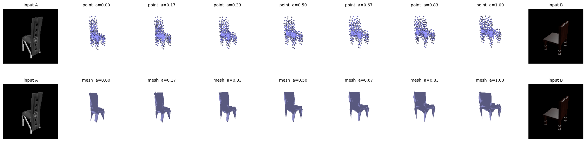
Interpolating the image features of two chairs decodes to a smooth sequence of plausible chairs, so the feature space is continuous.
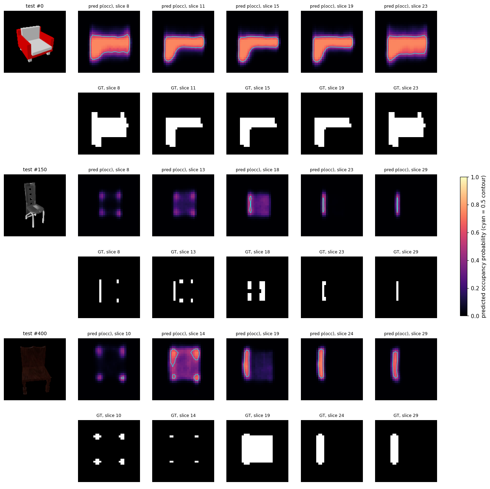
Thin parts get probabilities of 0.2–0.4: the model knows where they are but stays below 0.5, which explains the threshold result in 2.4.
| F1@0.05 | trained on chairs | trained on 3 classes |
|---|---|---|
| chair | 79.2 | 80.2 |
| airplane | 59.0 | 96.3 |
| car | 71.7 | 93.3 |
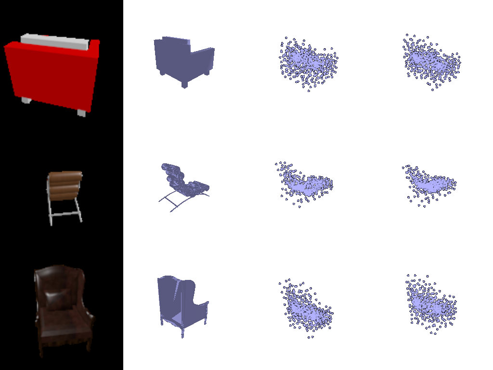
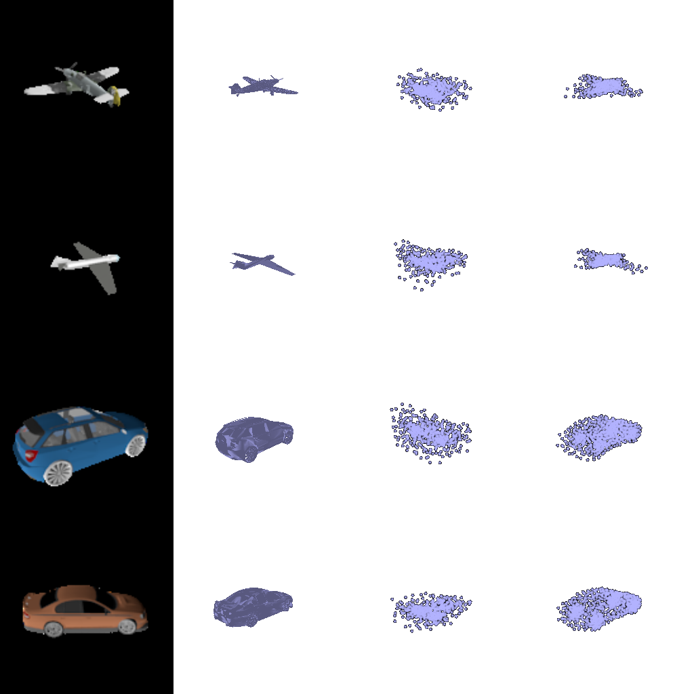
Input | GT | chair-only model | 3-class model.
On the same chair test set, training on three classes does not hurt (79.2 vs 80.2). The chair-only model turns every input into a chair, so it fails on planes and cars. Both models produce outputs that are much less diverse than the real shapes (pairwise chamfer between chair predictions: 0.005 vs 0.020 for the ground truth). The 3-class model effectively recognizes the class and deforms a class template: very consistent, but with less instance-specific detail.